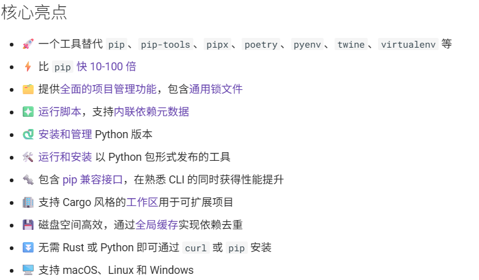
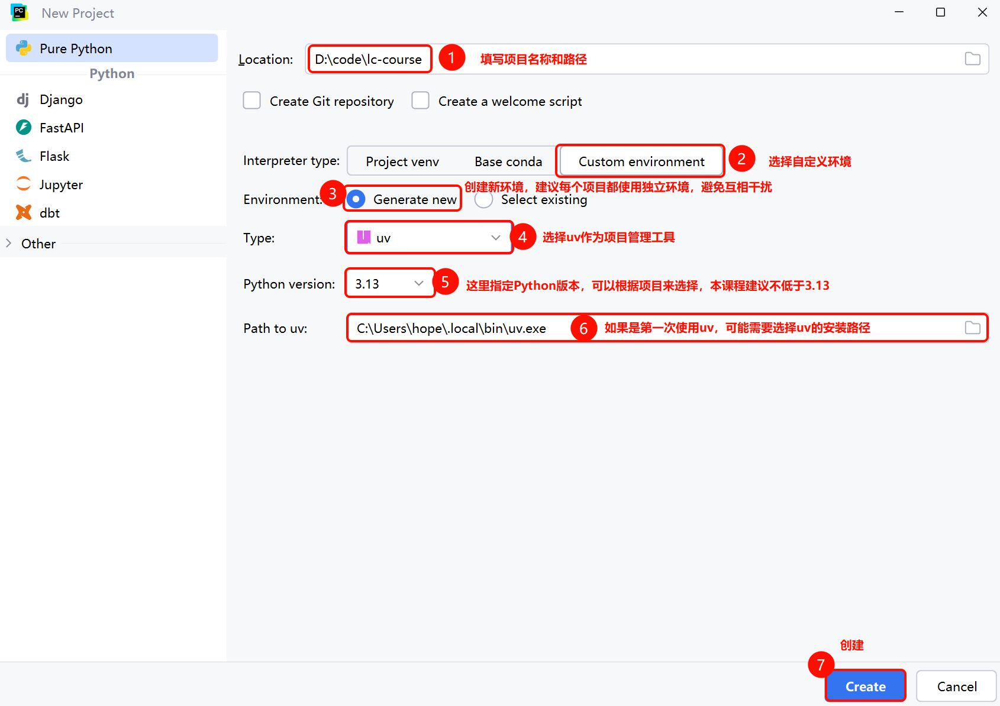
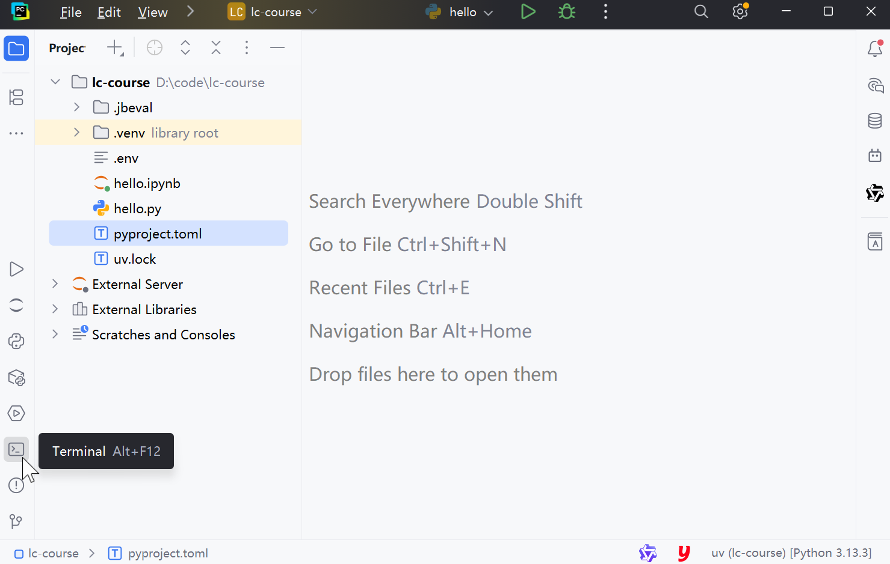
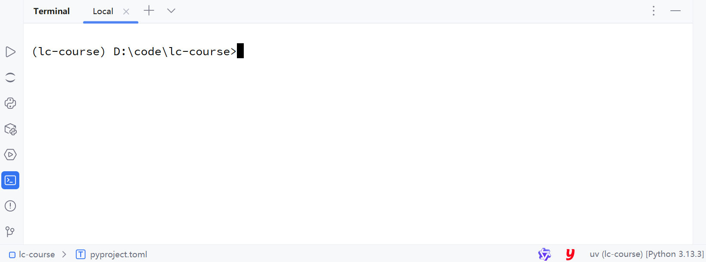
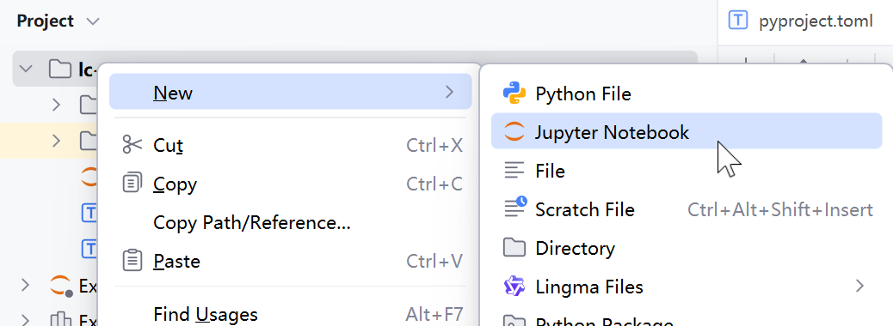
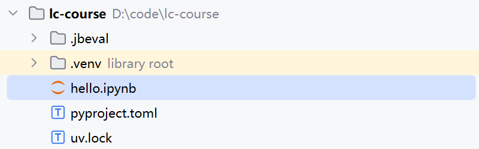
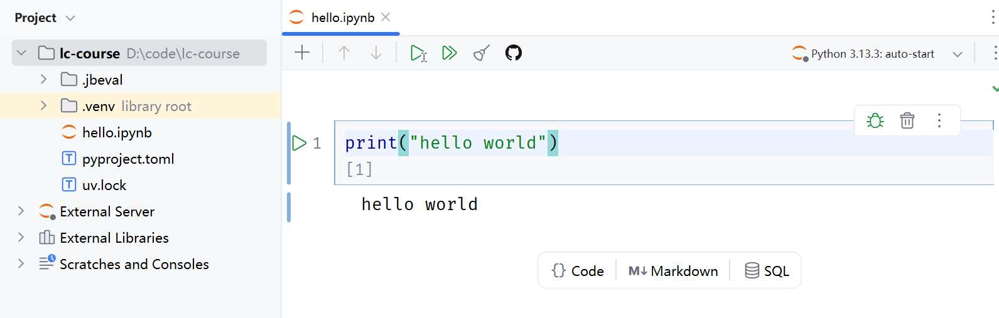

开发环境准备
现在，我们已经掌握了大模型提供的API接口规范了，不过，最终我们还是要用编程的方式来访问大模型。
所以，接下来就让我们准备好开发的 环境吧。
安装UV
Python的环境管理方案有很多种，例如：
-
pip
-
uv
-
conda
-
...
在后面的课程中我们会选择uv作为项目管理工具，其官网如下：
还有个第三方写的中文文档：
它有非常多的优点：

具体的安装方式大家可以参考官方文档：
https://uv.doczh.com/getting-started/installation/
最简单的安装方案就是使用pip：
pip install uv
详细教程可以参考视频：
https://www.bilibili.com/video/BV1Stwfe1E7s/?spm_id_from=333.1387.search.video_card.click
添加镜像源
默认情况下，uv下载依赖是到国外站点：https://test.pypi.org/simple，速度很慢。推荐大家将下载的镜像源改为国内站点。
uv支持项目级配置和系统级配置两种方案，项目级优先级高，但是需要每个项目都配置，比较麻烦。推荐采用系统级配置。
系统配置方式如下：
- Windows系统，在CMD运行如下命令：
setx UV_DEFAULT_INDEX "https://pypi.tuna.tsinghua.edu.cn/simple"
- MacOS或Linux系统：
echo 'export UV_DEFAULT_INDEX=https://pypi.tuna.tsinghua.edu.cn/simple' >> ~/.zshrc && source ~/.zshrc
常见的国内镜像站点有：
阿里云
https://mirrors.aliyun.com/pypi/simple/
腾讯云
https://mirrors.cloud.tencent.com/pypi/simple/
火山引擎
https://mirrors.volces.com/pypi/simple/
华为云
https://mirrors.huaweicloud.com/repository/pypi/simple/
清华大学
https://pypi.tuna.tsinghua.edu.cn/simple/
中国科学技术大学
https://pypi.mirrors.ustc.edu.cn/simple/
创建项目
接下来我们就创建一个项目，我们会使用PyCharm作为开发工具，以uv作为项目管理工具。
第一步，打开PyCharm，创建Project：

为了方便大家学习，我们会使用jupyter，所以需要在项目中引入notebook依赖。
在PyCharm中，左侧有一个Terminal按钮，点击即可打开终端：

如图：

在终端中输入命令：
uv add notebook
测试
为了测试环境，我们创建一个notebook试试：

起名为hello：
如图：

然后在代码框中编写打印HelloWorld的代码，快捷键SHIFT+ ENTER即可运行：：
